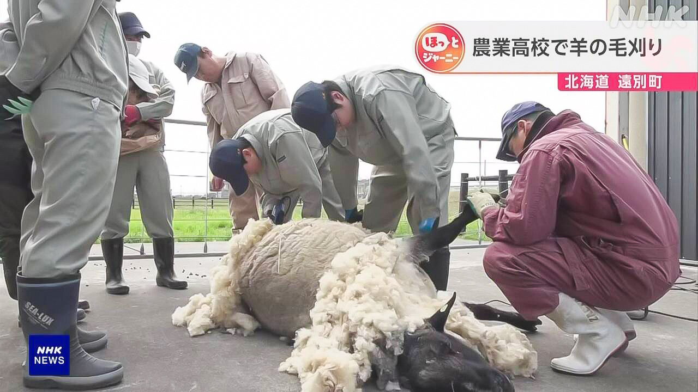

最新ニュース
1️⃣ 円とドルの問題などで日本とアメリカの大臣が話をした
今、アメリカのベッセント財務長官が日本に来ています。円とドルの問題などについて12日、日本の片山財務大臣と東京で話をしました。
今、お金の市場では、円が安くてドルが高くなっています。日本は先月、日銀が円をたくさん買って、円が安くなりすぎないようにしました。
2人は、円とドルの最近の動きやこれからの動きについて話をしました。
片山大臣は、よい方向に進むように一緒に頑張ることを確認したと言いました。
2️⃣ お菓子の会社カルビー 主な商品の袋を白と黒の色だけにする
お菓子を作っている会社のカルビーは、お菓子の袋のデザインをオレンジや黄色など明るい色にしています。しかし、主な商品の袋を、しばらくの間、白と黒だけの色にすると言いました。
理由は、アメリカなどとイランの戦いで、原油からつくるインクが足りなくなる心配があるからです。
白と黒の袋になるのは「ポテトチップス」や「かっぱえびせん」など14の商品です。今月25日から少しずつ店の棚に並びます。
カルビーは「これからも、商品を届けるためにいろいろな方法を考えていきます」と言っています。
3️⃣ 外国人が病院で使うことができる便利なアプリ
病院で、医者が体の調子などを聞くことを「問診」と言います。
千葉県成田市の会社などは、外国人が問診のときに使うことができるアプリをつくりました。
アプリでは、自分の国の言葉で体の調子を伝え、みてもらいたい専門の医者を選びます。言葉は日本語に翻訳されます。
先月、成田空港などで働くミャンマーやベトナムの人が、アプリを使って医者にみてもらいました。
ミャンマーの人は「病院に行くとき、いちばん心配なのは言葉です。自分の国の言葉で伝えることができるから安心です」と話していました。
4️⃣ 北海道 高校生たちが羊の毛を刈った

夏を前に、北海道遠別町の農業高校では、生徒たちが育てている羊の毛を短く刈りました。
先生は、まず生徒たちに、毛を刈る道具の使い方を教えました。そして、羊の体をしっかり押さえるように言いました。
最初は、羊が動いてしまったり、生徒たちが道具をうまく使うことができなかったりしました。生徒たちはだんだん慣れて、1時間半で4kgぐらいの毛を刈りました。
初めて羊の毛を刈った生徒は「羊がけがをしないように気をつけました。とても難しかったです」と話しました。
- 〜ている / 〜でいる
- 〜など
- 〜について
- 〜すぎる
- 〜ようにする
- 〜ように
- 〜から
- 〜こと
- 〜や〜など
- 〜だけ
- 〜がある / 〜がいる
- 〜になる
- 〜ず / 〜ずに
- 〜ため
- 〜ため(に)
- 〜ことができる
- 〜てもらう / 〜でもらう
- 〜ても / 〜でも
- 〜前に
- 〜方
- 〜てしまう
- 〜たり〜たりする
- 〜くらい / 〜ぐらい
vebaev.github.io
Generated: 2026-05-12 13:04:22 UTC